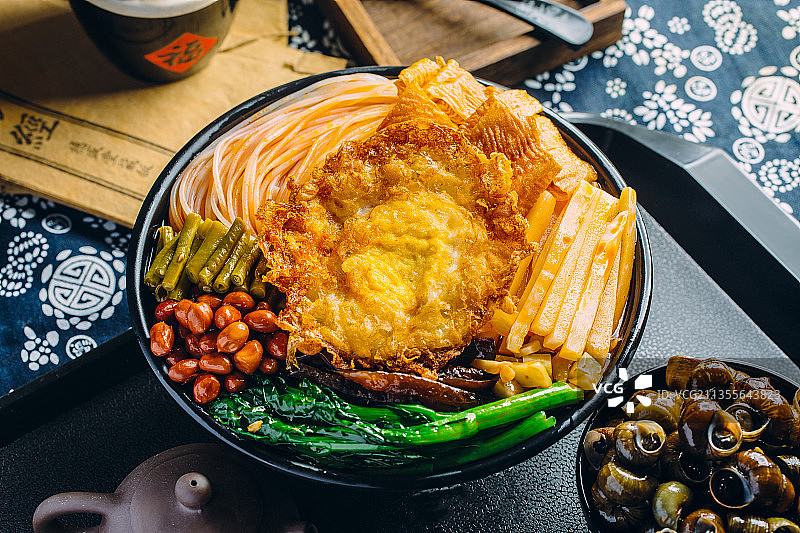

螺蛳粉起源于20世纪70年代末的广西柳州，虽然历史较短，但其根基——嗍螺和米粉在柳州已有悠久的历史。
据考古发现，早在2万年前，柳州的“柳江人”就开始捕捞螺类食用。关于螺蛳粉的起源，有几种说法：
夜市起源说：上世纪七八十年代，柳州谷埠街夜市的摊贩将螺蛳汤与米粉结合，形成了螺蛳粉的雏形。
杂货店起源说：1980年代中，解放南路的一家杂货店将干切粉放入螺蛳汤中煮制，后来逐渐发展为螺蛳粉。
米粉：选用优质干米粉或鲜米粉。
螺蛳：新鲜螺蛳，提前浸泡去泥沙。
配料：酸笋、酸豆角、花生、腐竹、木耳、黄花菜、青菜等。
调料：八角、桂皮、草果、香叶、花椒、南腐乳、辣椒油、盐、鸡精、料酒等。
猪大骨：用于熬制汤底。
准备汤底：
将猪大骨、黄豆、老姜放入锅中，加水煮沸后转小火炖煮2小时。
炒香八角、桂皮、草果、香叶等香料，加入螺蛳，再放入南腐乳、料酒、盐等调料，炒匀后倒入骨汤中，继续熬煮2小时。
处理米粉：
干米粉提前用冷水浸泡3小时，再用热水烫软后捞出，放入冷水中备用。
炒制配料：
酸笋、酸豆角切段，花生炸香，腐竹炸至金黄。
煮制：
将泡好的米粉放入开水中烫熟，捞出放入碗中。
加入烫好的青菜、酸笋、酸豆角、腐竹、花生等配料。
浇汤：
将熬好的螺蛳汤浇在米粉上，根据口味加入辣椒油、香菜等。

食材新鲜：螺蛳和米粉必须新鲜，否则会影响口感和风味。
汤底熬制：熬汤时火候要适中，小火慢炖才能熬出浓郁的汤底。
酸笋处理：酸笋是螺蛳粉的灵魂，需提前切好，炒制时充分释放酸味。
米粉烫制：米粉烫制时间不宜过长，否则会失去弹性。
配料多样：可以根据个人口味调整配料和调料的比例。